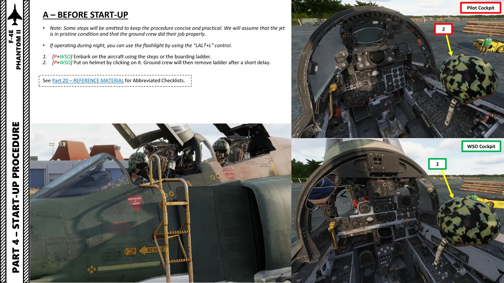
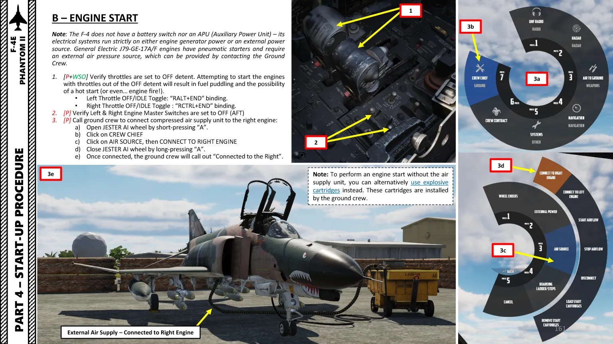
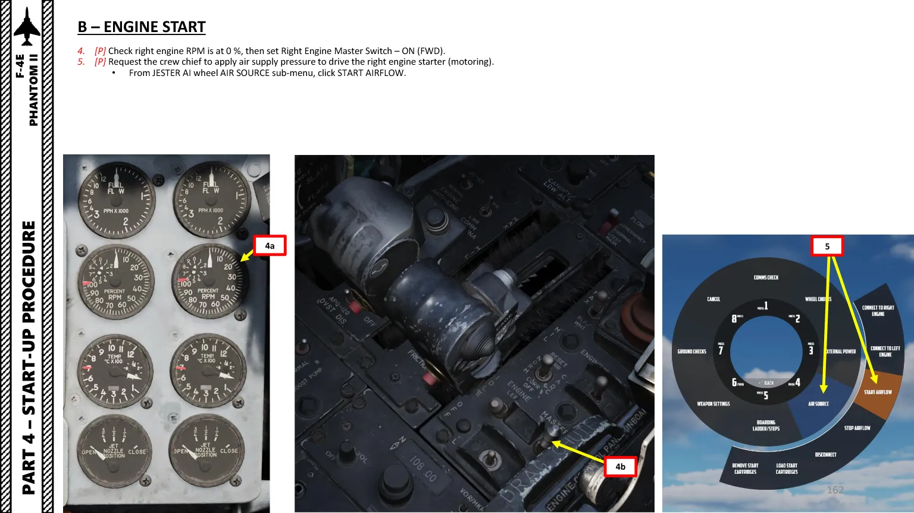
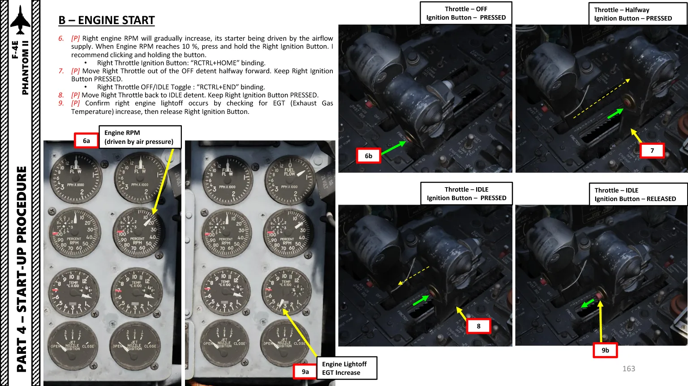
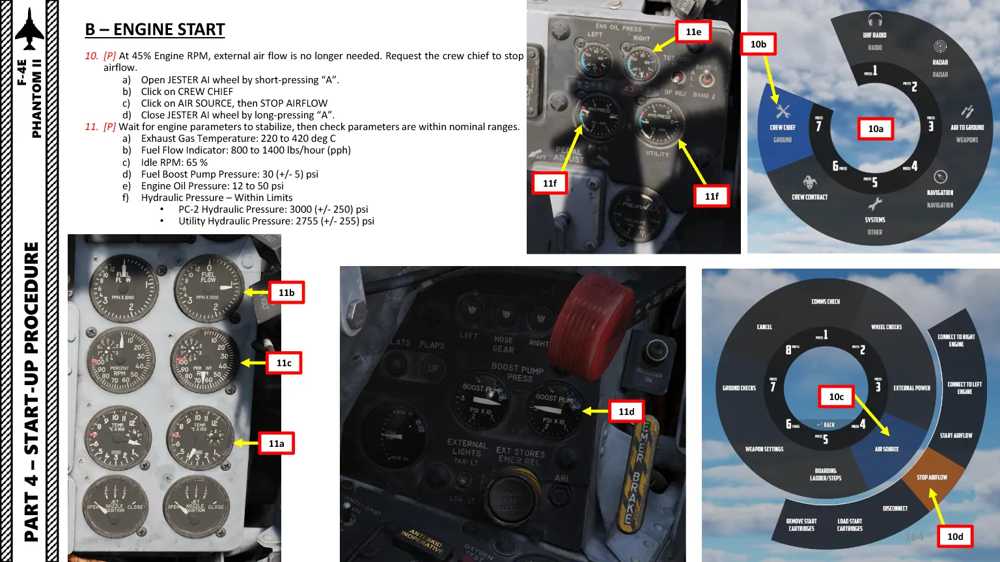
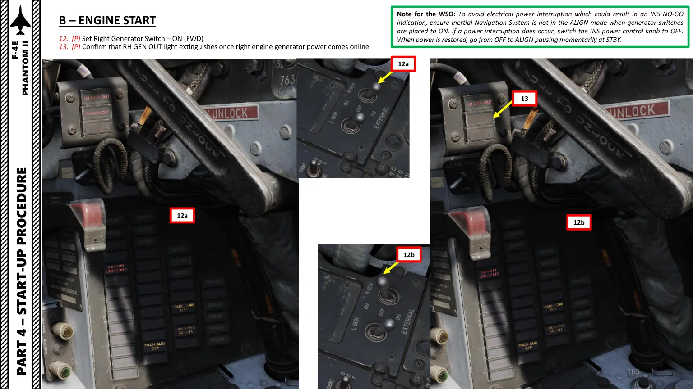

De l'avion complètement froid aux deux réacteurs stabilisés au ralenti. Deux J79 à démarrer l'un après l'autre, avec une alimentation externe ou une cartouche — et un ordre qu'on ne bouscule pas.
Ce que cette leçon couvrira : Démarrage à froid, en checklist cochable, avec pour chaque geste le quoi faire, l'où dans le cockpit et le pourquoi.
Le F-4E est un biplace : chaque étape précisera si elle revient au pilote, au WSO, ou à JESTER quand tu voles seul. Les fonctions citées porteront leur bouton HOTAS entre parenthèses — cliquable vers le mapping, qui attend encore le relevé des binds.
Monter à bord et poser l'avion dans un état connu. Le guide simplifie volontairement cette phase — l'avion est supposé en bon état et correctement préparé par l'équipe au sol.

img/chuck/.Embarquer et mettre le casque P + WSO
Cliquer sur le casque le met. L'équipe au sol retire l'échelle peu après — c'est le signal que l'avion est à toi.
De nuit, penser à la lampe torche
Elle rend le cockpit lisible avant que l'éclairage de bord ne soit alimenté.
C'est ici que bloquent la plupart des premiers essais — et pour une raison structurelle, pas par distraction.

img/chuck/.Manettes des gaz vérifiées dans le cran OFF P + WSO
Démarrer avec une manette sortie du cran OFF fait s'accumuler du carburant dans le réacteur : démarrage chaud, voire feu moteur. C'est la vérification qui évite le plus gros incident possible à ce stade.
Engine Master Switches gauche et droit sur OFF (arrière)
Demander la connexion de l'air comprimé au réacteur droit
Roue JESTER, menu Crew Chief, puis Air Source et Connect to Right Engine. L'équipe au sol confirme à la radio une fois connectée. Voir la leçon 4 · JESTER et le Crew Chief pour l'usage de la roue.
Le droit d'abord, parce que c'est lui que le groupe d'air alimente. La séquence de manette est contre-intuitive : ce n'est pas un simple passage de OFF à IDLE.

img/chuck/.Régime droit à 0 %, puis Right Engine Master Switch sur ON (avant)
Demander la mise en pression pour entraîner le démarreur
Roue JESTER, Air Source, Start Airflow. Le régime commence à monter, entraîné par l'air.

img/chuck/.À 10 % de régime : bouton d'allumage droit maintenu enfoncé
Et il reste enfoncé pendant les deux étapes suivantes — c'est le point que les procédures simplifiées oublient.
Manette droite sortie du cran OFF, avancée à mi-course
Allumage toujours maintenu.
Manette droite ramenée au cran IDLE
Allumage toujours maintenu. C'est ce va-et-vient mi-course puis ralenti qui amorce correctement.
Allumage relâché dès que la température des gaz monte
La hausse de température confirme l'allumage effectif. Pas avant.

img/chuck/.À 45 % de régime : demander l'arrêt du flux d'air
Roue JESTER, Air Source, Stop Airflow. Ça ne se coupe pas tout seul, il faut le demander.
Paramètres stabilisés et dans les plages
Température des gaz 220 à 420 °C · débit carburant 800 à 1400 lb/h · régime de ralenti 65 % · pression pompes carburant 30 ± 5 psi · pression d'huile 12 à 50 psi · hydraulique PC-2 3000 ± 250 psi et utilitaire 2755 ± 255 psi.

img/chuck/.Générateur droit sur ON, voyant RH GEN OUT éteint
Le voyant qui s'éteint est la confirmation que le générateur débite. S'il reste allumé, quelque chose n'a pas pris.
Le second moteur suit la même logique, puis chaque siège a sa propre liste avant de rouler.
Recommencer la séquence pour le réacteur gauche
Même enchaînement : master switch, air, 10 % puis allumage maintenu, manette mi-course puis ralenti, contrôle des paramètres, générateur.
Faire déconnecter le groupe d'air et retirer les moyens sol
Lancer l'alignement de la centrale à inertie
C'est le poste le plus long de toute la préparation, à lancer dès que l'électricité est stable — voir leçon 6.
Reste à détailler depuis le guide : les deux listes avant roulage, distinctes selon le siège (une pour le pilote, une pour le WSO), et les checklists abrégées de la partie 20.
Planches et procédure : DCS Guide F-4E Phantom II de Chuck — partie 4, pages 145 à 175. Guide distribué gratuitement et livré avec le module par Heatblur ; reproduit ici à titre pédagogique, tous droits à son auteur. Arbitre en cas de doute : le manuel officiel Heatblur, Mods\aircraft\F-4E\Doc\F-4E Manual.pdf. Voir aussi la section correspondante du cursus. Les badges de bouton seront lus en direct dans data/f4e-bindings.json (mêmes données que le mapping HOTAS) — jamais de numéro figé dans le texte.